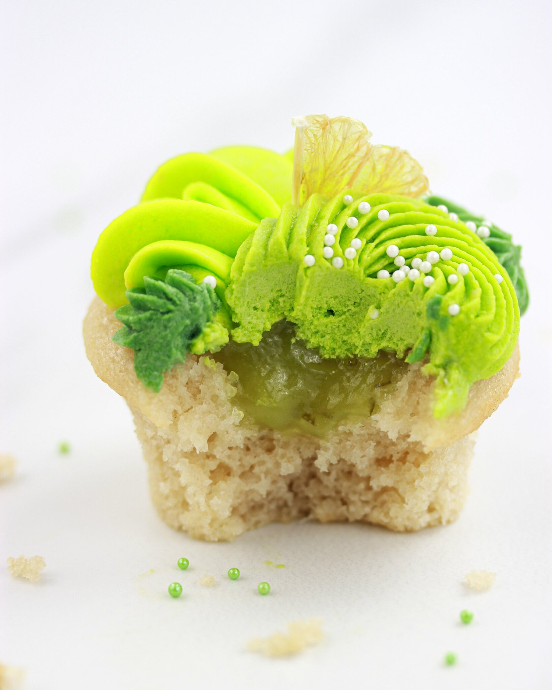
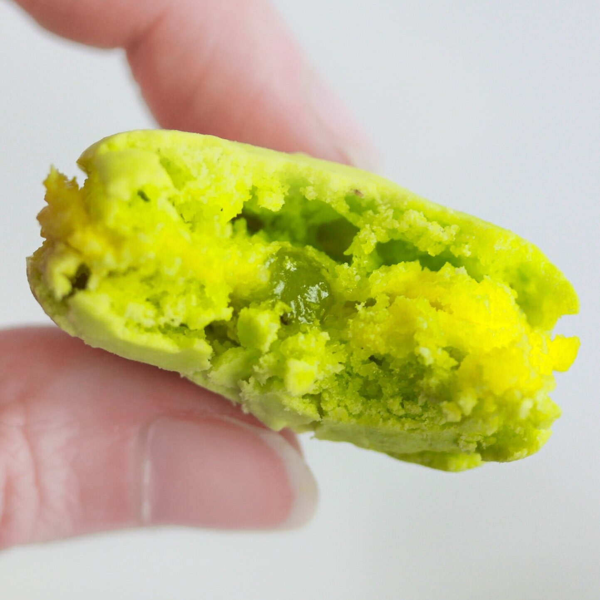

Vegan Lime Curd (gluten free)
We’ve probably all heard of lemon curd, but have you ever had lime curd? This vegan lime curd recipe is one to try! It’s tangy and sweet, simple to make, and naturally gluten free as well!

Wooo it’s been a while since blogging, so give me a little grace getting back to it. If you haven’t yet, please give my welcome back post a read, as I give more details on my return there. Feels a little weird right now, but I’m sure it’s like riding a bike once I get used to it. I’m just happy to be here :) and with a new recipe to share!! Somewhat simple for now, but it’s a start!
A couple weeks back, I tried out Nora Cooks’ vegan lemon curd recipe and loved it soo much. It’s so simple to make too (seriously less than 10 minutes). I thought “why can’t I do this with other citrus?!” and so this modified sweet and tangy vegan lime curd recipe came about.
So far, I’ve used this lime curd recipe in some lime cupcakes as well as some lime macarons (Update: I use this often now! This recipe is a great base for other fruit fillings, such as orange, guava, and passionfruit). This recipe is a perfect dessert pairing and would be delicious with biscuits, pancakes, and crepes.
Give it a go and let me know what you think! Not only is this lime curd vegan, it’s also gluten free.

Vegan Lime Curd
Makes: 1 cup
-
1/2 cup almond milk
-
1/4 cup fresh squeezed lime juice (~2 limes)
-
1/2 TBSP lime zest
-
2/3 cup granulated sugar
-
1 TBSP cornstarch
-
1 TBSP vegan butter
-
couple drops green food coloring (Optional)
-
pinch of salt
Place all ingredients in a small pot or saucepan and stir over medium/low heat. Continuously whisk the mixture while it thickens, about 8-10 minutes.
Once thickened, place lime curd in a sealed container in the fridge to chill overnight - it will thicken more once cooled.
Serve on pancakes, cake, or other baked goods you desire. Enjoy!